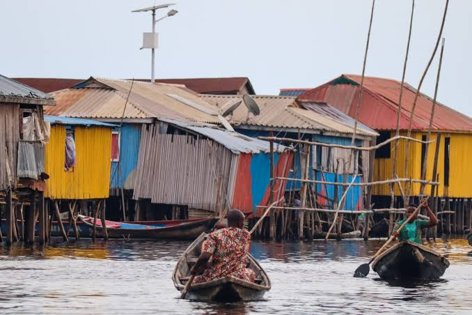
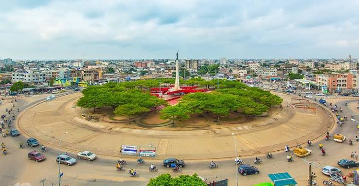
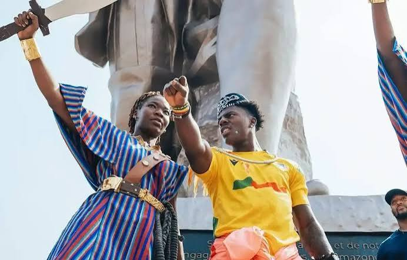
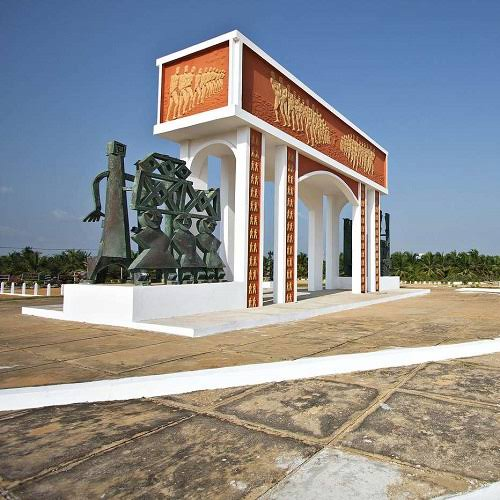
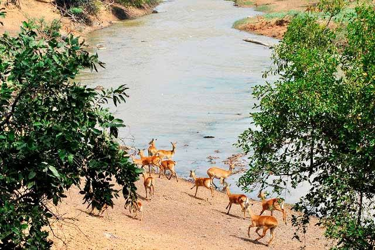

Ganvié
Discover the famous floating village of Ganvié and experience its unique culture and way of life.
Explore Ganvié
Explore the culture, history, nature, and beautiful destinations of Benin.
Explore DestinationsBenin is a country rich in culture, history, traditions, and natural beauty. From historic cities and cultural landmarks to beautiful beaches and national parks, Benin offers many places to discover.
Travel Benin helps visitors discover some of the most remarkable destinations and plan an unforgettable trip.


Discover the famous floating village of Ganvié and experience its unique culture and way of life.
Explore Ganvié
Explore the history and cultural heritage of Ouidah, one of Benin's most important historic cities.
Explore Ouidah
Experience the natural beauty and wildlife of one of West Africa's remarkable national parks.
Explore PendjariDiscover Benin's traditions, cultural practices, festivals, and heritage.
Explore historical places and learn about the important history of Benin.
Enjoy national parks, beaches, landscapes, and unique natural environments.
Start planning your journey and discover the destinations that make Benin special.
Plan Your Trip